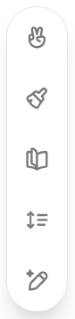

En el chatbot Claude existe una función similar llamada: Artefactos.
Inteligencia Artificial en Educación
Canvas de ChatGPT
Qué es
Canvas es una herramienta de la versión de pago de ChatGPT diseñada para facilitar la creación y edición de textos de manera dinámica dentro del entorno conversacional. Su principal objetivo es ofrecer un espacio más amplio y versátil para trabajar en contenidos extensos o complejos que requieren atención continua y edición detallada, sin las limitaciones de la típica ventana de chat.
Con canvas, se puede:
-
Crear documentos: Redactar informes, artículos, cartas, correos electrónicos y cualquier tipo de texto largo que necesites elaborar. Es útil para estructurar ideas y desarrollar contenido de una forma más organizada.
-
Editar y mejorar textos: Se pueden realizar revisiones, hacer correcciones y ajustar el contenido en el mismo espacio donde se trabaja, pidiendo sugerencias al asistente para perfeccionar la redacción, el tono, o ajustar la longitud del texto.
-
Guardar y gestionar contenido: Canvas permite que el contenido quede guardado y se pueda consultar en cualquier momento de la conversación, facilitando un seguimiento continuo. Esto es especialmente útil cuando trabajas en un proyecto a lo largo de varias sesiones.
-
Colaborar de manera interactiva: Al integrar la función de canvas con el asistente, es posible ir desarrollando una idea con ayuda de la IA, revisando y mejorando el contenido en tiempo real. Esto convierte el proceso en algo colaborativo, donde se pueden probar diferentes enfoques o estilos según lo requiera el documento.
Canvas es apropiado para cuando el trabajo necesita una estructura más compleja o elaborada que la típica conversación en el chat, ya que aporta un espacio mucho más amplio y flexible para trabajar textos detallados de manera eficiente y organizada. En el siguiente ejemplo se le han pedido normas de convivencia de la clase. Podemos borrar texto y añadir como si se tratase de un editor de textos.
{kind=link}
En la esquina inferior derecha hay un icono en el que al pasar el ratón por encima nos salen una serie de opciones. Estos iconos, por orden, hacen lo siguiente:

1. Añadir emoticonos.2. Realiza una revisión final antes de darla por buena (busca incoherencias, aspectos mejorables, etc.)
3. Permite aumentar o disminuir la complejidad del texto.
4. Aumenta o disminuye la longitud del texto.
Obra publicada con Licencia Creative Commons Reconocimiento Compartir igual 4.0